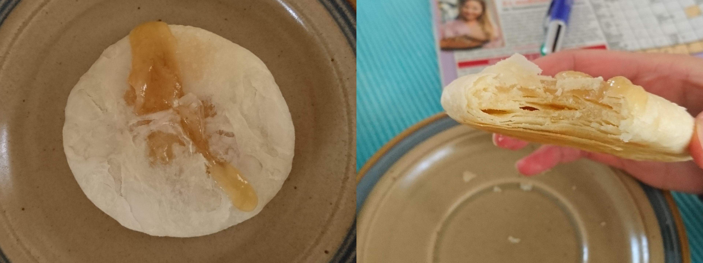

Leider kommt dieses Rezept noch nicht an das taiwanesische Original heran. Ergibt 12 Sonnenkuchen.

Zutaten (Menge ×1)
Gib die gewünschte Menge an:
Wasserteig
Mehl Type 405 (gesiebt)
Heißes Wasser
Puderzucker (gesiebt)
lauwarmer Butterschmalz
Salz
Kaltes Wasser
Ölteig
Mehl Type 405 (gesiebt)
lauwarmer Butterschmalz
Füllung
Mehl Type 405 (gesiebt)
Wasser
lauwarmer Butterschmalz
Puderzucker (gesiebt)
Salz
Honig
(Milchpulver)
Utensilien
Holzfläche für die Teigkugeln
Schmales Nudelholz
Frischhaltefolie
Ofeneinstellung
⏲ 220°C Ober-/Unterhitze, 8 - 10 Minuten
Kurzfassung
Wasserteig vorbereiten und 10 Minuten ruhen lassen.
Ölteig vorbereiten und mit Wasserteig vereinen.
Füllung vorbereiten und mit Teig vereinen.
Backzeit: 8 - 10 Minuten
Wasserteig
Mehl mit dem heißen Wasser verrühren.
Mit seinen restlichen Zutaten zu einem recht weichen Teig verkneten.
10 Minuten unter Frischhaltefolie ruhen lassen.
Zu 12 gleichen Kugeln formen.
Ölteig
Mehl und Butterschmalz zu einem ähnlich weichen Teig wie der Wasserteig verkneten.
Ebenfalls zu 12 gleichen Kugeln formen.
Vereinigung der Teige
Eine Kugel des Wasserteigs auf der Handfläche ausbreiten, dabei in der Mitte einen dickeren Boden lassen.
Eine Kugel des Ölteigs darauf legen und mit dem Wasserteig umschließen.
Auf einer leicht bemehlten Fläche mit einem schmalen Nudelholz den Teig mit wenig Druck einmal nach oben und einmal nach unten ausrollen.
Entlang der längeren Seite aufrollen und nochmals ausrollen: jeweils 2× nach oben und unten, sodass Der Teig etwa so lang wie die Handfläche ist.
Nochmals entlang der längeren Seite aufrollen.
Mit dem Finger eine Delle in die Mitte drücken und entlang dieser Kante die beiden Enden zusammendrücken.
Mit allen Kugeln so fortfahren. Die fertigen Kugeln unter der Frischhaltefolie feucht halten.
Füllung und Backen
Alle Zutaten zu einer ähnlich weichen Masse verkneten wie die anderen beiden Teige zuvor.
Wieder 12 gleiche Kugeln daraus formen und folgendes für alle Kugeln wiederholen:
Eine der Teigkugeln in der Handfläche ausbreiten. Die Seite mit den zusammengedrückten Enden ist dabei oben.
Mit dem linken Zeigefinger und Daumen ein O formen und darauf die Teigscheibe legen
eine Kugel der Füllung darauf legen und mit der rechten Hand abwechselnd die Teigscheibe drehen und die Füllung sanft hinein drücken. Der linke Zeigefinger und Daumen im O drücken dabei die Seiten leicht ein, bis die Füllung umschlossen ist. Oben den Teig gut über der Füllung zusammendrücken.
Auf dem Backblech zu einer runden Scheibe mit ca. 0.5 cm Dicke drücken.
Ofen auf 220°C Ober-/Unterhitze vorwärmen und 8 – 10 Minuten backen